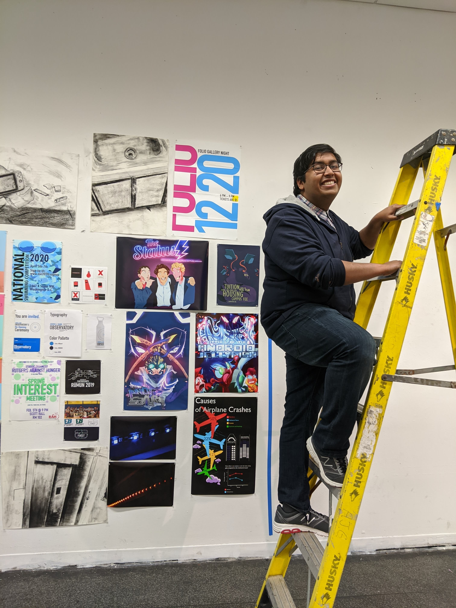

About Me.

Who is Pramit (Rik) Sarkar?
Hiya! I am a graphic designer, motion graphics designer, and video editor! I am a junior currently pursuing a BFA in Design at Rutgers University in Mason Gross School of the Arts.
As a college student, I am very involved in clubs and organizations around campus. Some of the clubs I am involved in, include Institute for Domestic and International Affairs (IDIA), TEDx Rutgers, and Student Organized Rutgers Against Hunger (SORAH). From the minute I arrived to university, I wanted to keep myself active in the community and find a way to use my artistic abilities while constantly pushing my understanding about the world.
Through my different projects, I have achieved many of my skills through initiative and a knack for self learning on tight deadlines. I look at art as an opportunity for exploration and understanding, and channel much of that mentality, into how I approach all my projects.